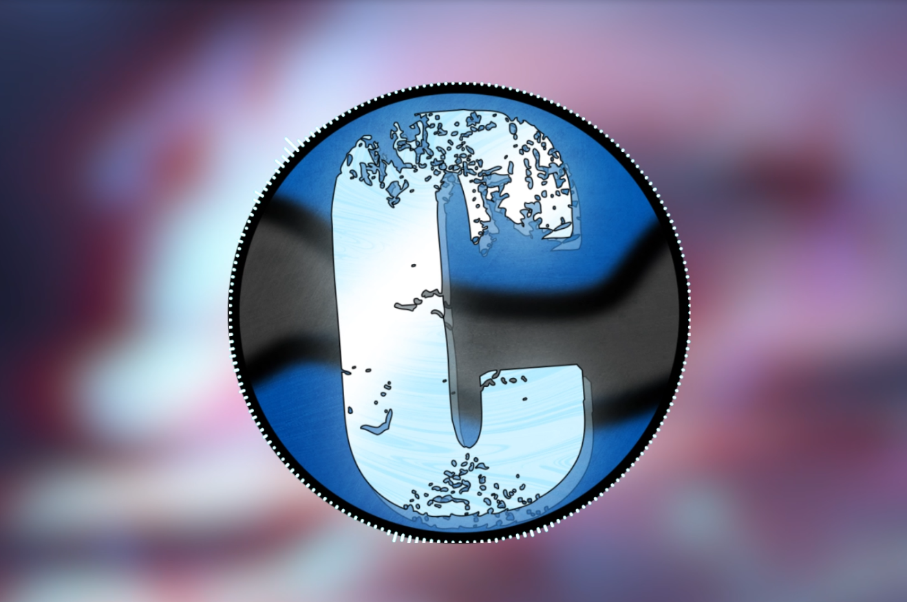

Visualizer🎶
Een logo die beweegt op de muziek!
Hij beweegt op mijn eigen muziek.

Een screenshot van de visualizer.
Programma: 
Voor:
Thema: Digitale Muziek
Jaar: 2026
Dit project is een visualizer die beweegt op mijn muziek.
De animatie is een logo die beweegt op de muziek.
Ook zitten er strepen op die omhoog en omlaag springen op basis van hoe hard de muziek is.
Ik heb dit gemaakt door 2 tutorials te combineren: een voor het logo dat beweegt en een voor de strepen die op en neer springen.
Hieronder kan je de video's bekijken!
Op deze site kan je dingen vinden zoals mijn projecten, informatie over mij en veel meer!
Druk op een van deze knoppen om naar een specifieke pagina te gaan.